Step 1: Create Spring Boot Project using Spring Initializr.
Step 2: Provide Group Name and Artifact Name.
Step 3: Provide Dependency (Web, H2, JPA, Thymeleaf). H2 is optional if you are using some Other database.
Note: Current Version is specific to Thymeleaf as Front End. In Future i will be releasing version for Angular with Web Services.
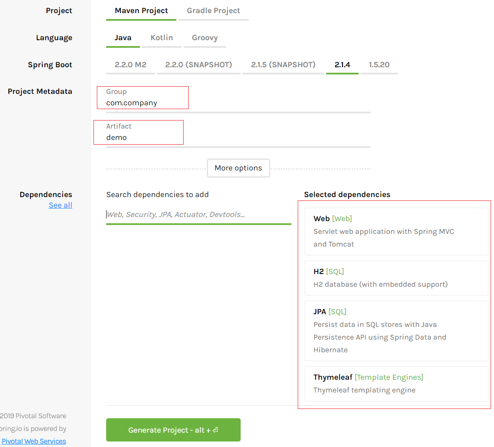
Step 4: Note down the base package name (example : com.company.demo)
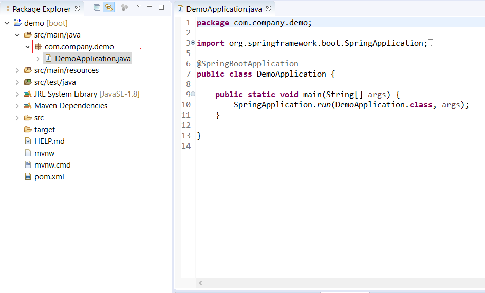
Step 5: Now Open this tool in your browser and provide the same base package name which you have noted. (example : com.company.demo)
Step 6: Provide Entity Name along with Number of Fields.
Step 7: Click on Generate Project.
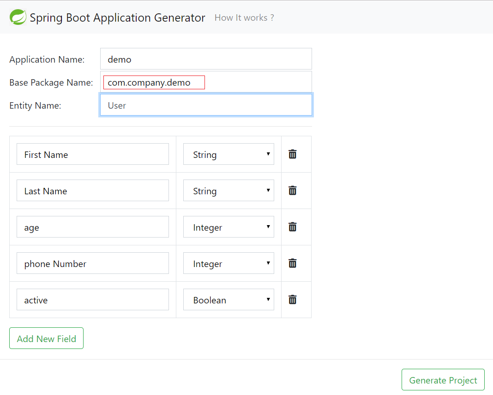
Step 7: You will be able to see 2 folders in ZIP file.
- Package Folder
- templates Folder
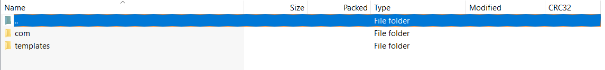
Step 8: copy "com" folder and paste in src folder in your Project. it will ask you to override. Click on override all changes. it will not affect current changes.
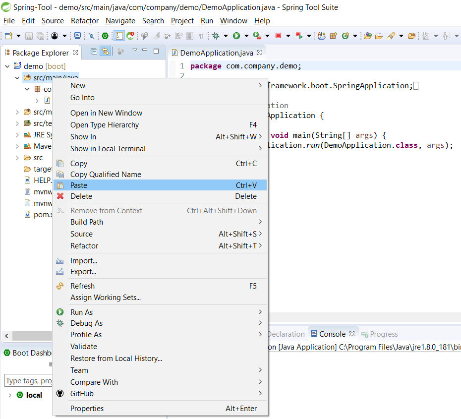
Step 9: In ZIP file double click on templates folder and copy user folder and paste in templates folder in project as shown below.
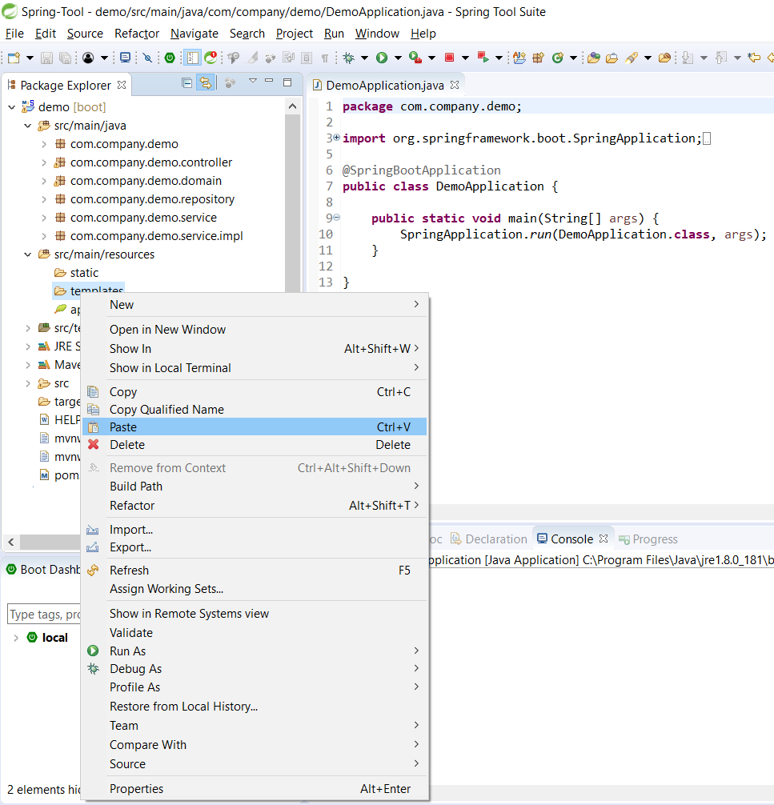
Step 10: Project will be having below changes as shown in image.
- User.java under domain package
- UserRepository.java under repository package
- UserService.java under service package
- UserSerciceImpl.java under impl package
- UserController.java under controller package
- templates/user/_form.html (common form for new and edit page)
- templates/user/new.html
- templates/user/edit.html
- templates/user/index.html
- templates/user/show.html
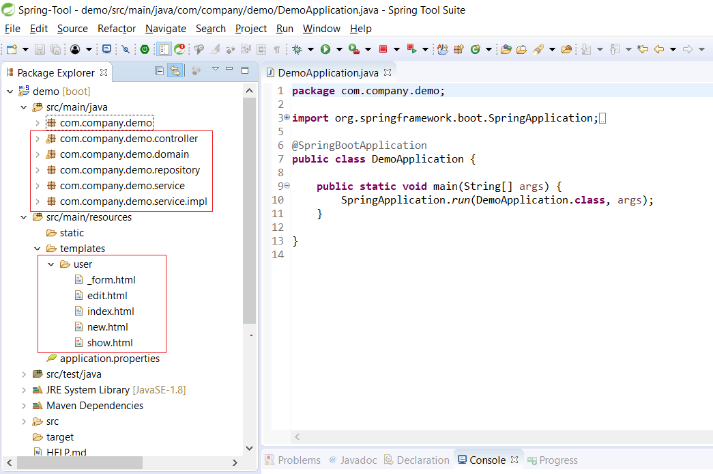
Step 10: Now Right Click on Main Class and Run Project as Spring Boot App.
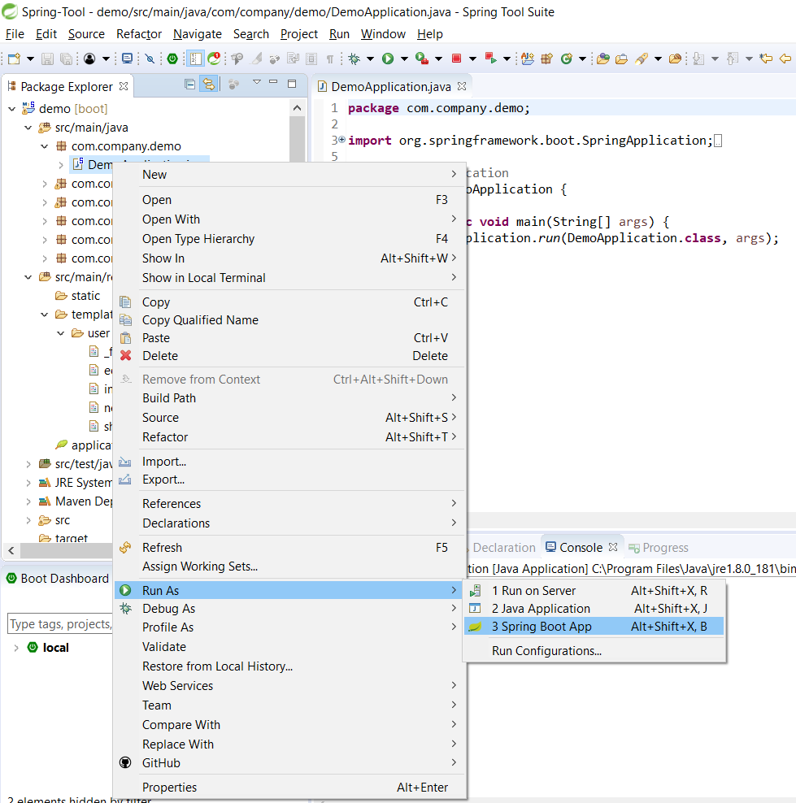
Step 10: Server will start at port 8080.
Step 11: Open the browser and goto localhost:8080/users
Step 12: you will be able to see list of user page.
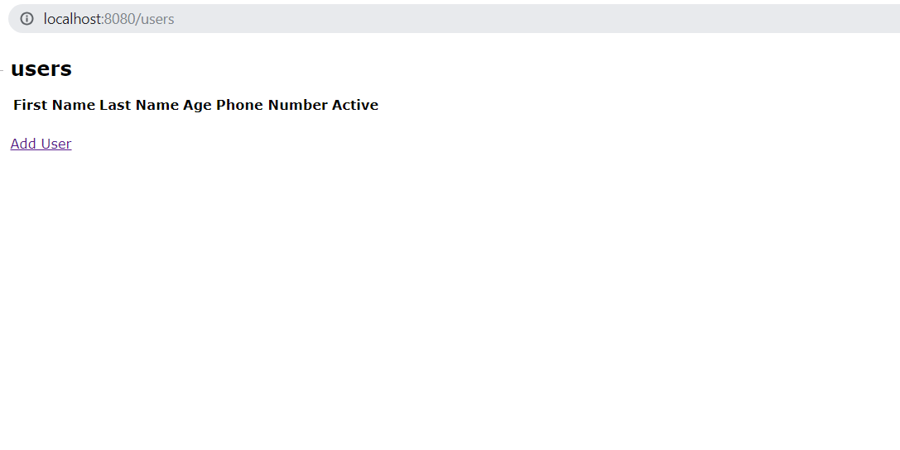
Step 13: Click on Add User and Feel the details.
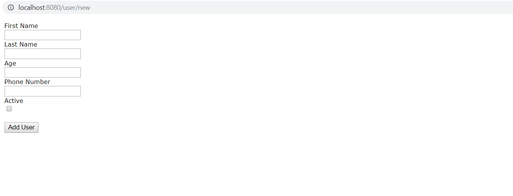
Step 14: This tool Provide all basic operation for given entity. (CREAT, READ, UPDATE, DELETE) with listing page.
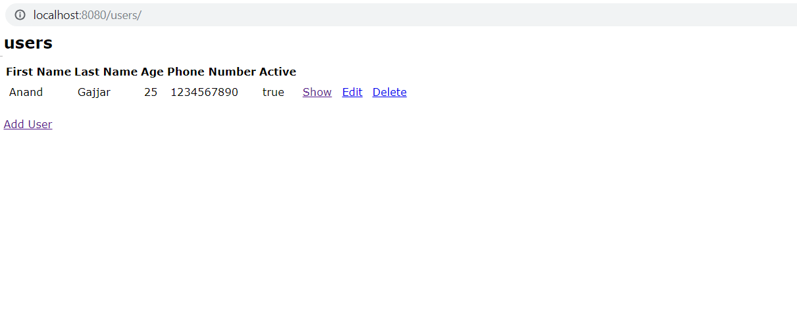